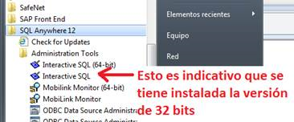

InfoCache SUP v1.3.18 (Caduca el 24/01/2018)
CAMBIOS en la versión 1.3.18...
Ampliación de la fecha de caducidad del programa al 24 de Enero del 2018
CAMBIOS en la versión 1.3.17...
Nuevos Servidores SUP... Antiguo SUP 2.3.5, Nuevo SMP 3.0
Otras mejoras y aviso 4 días antes de caducar versión. Nueva Web de actualizaciones.
PRE-REQUISITOS...
Es necesario tener instalado el driver ODBC SQLAnywhere versión 12.x o 16.x
Desde el siguiente enlace de SAP puede descargarse el instalador...
ODBC Drivers for SQLAnywhere
Aunque debe solicitarse su instalación a través de SNOW como software Windows estandarizado.
IMPORTANTE destacar que debe instalarse el driver ODBC de 32bits, por defecto solo se instala el de 64bits.
Durante en el proceso de instalación hay que asegurarse que está marcada la instalación de las versiones de 32bits.
En la siguiente imagen se muestra el punto de menu en Windows 7 donde aparece el Software ODBC de 32bits una vez instalado.
